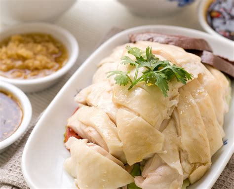

Hainan Chicken
Original Website

This delicately sented dish gets its name from the Chinese Island of Hainan; it's popular in Malaysia and Singapore too!
Combine with bold scallion and chile dipping sauce, and you'll find it impossible to go back to dry and bland baked chickens.
Ingredients
- 6-7 pound chicken
- 6 large scallions corasely chopped
- One 3-inch piece of ginger, thinly sliced
- 2 tablespoons of vegetable oil
- 1 1/2 cups of log-grain white rice, rinced
- 2 garlic cloves, minced
- 2 1/4 cups chicken stock or low-sodium broth
- Salt
Equipment
- Pot large enough for a 6-7 pound chicken
- Cutting board
Procedure
- Set the chicken in a large pot, breast side down, and cover with water
- Add the scallions and ginger and bring to a boil
- Simmer over low heat for 20 minutes, skimming occasionally.
- Turn the chicken breast side up and simmer for an additional 40 minutes.
- Remove from the heat, cover and allow to cool for one hour until cooked through.
Optional Sauces
Scallion Dipping Sauce and Chile Dipping Sauce